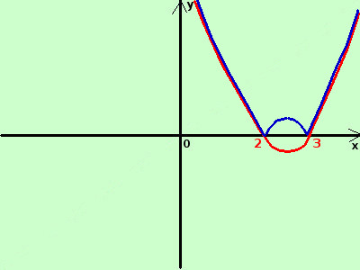

|
sviluppo Data la seguente funzione costruitene approssimativamente il grafico y = |x2 - 5x + 6|  considero la funzione senza modulo y = x2 - 5x + 6 e' la parabola di vertice il punto V(5/2; -1/4) taglia l'asse delle x nei punti A(2;0) e B(3;0) se pongo x2 - 5x + 6 = 0 risolvendo l'equazione di secondo grado ottengo x= 2 e x= 3 Disegno la parabola (in rosso) ruotando attorno all'asse x perpendicolarmente al piano cartesiano ribalto la parte sotto l'asse x sopra l'asse stesso in blu il risultato finale |